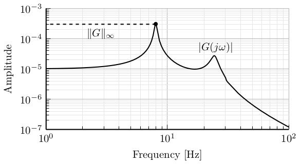
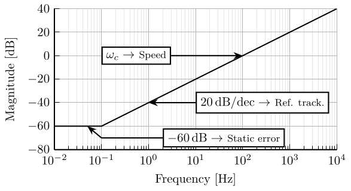
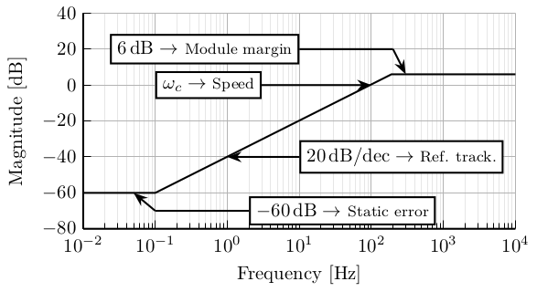
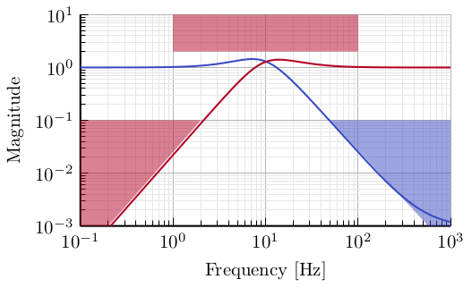

Figures to Order
Table of Contents
- 1. To Order
- 2. H-Infinity - Complementary filters - Generalized plant
- 3. H-Infinity - Complementary filters
- 4. H-Infinity - Optimal Complementary Filters
- 5. Fusion of two noisy sensors
- 6. Fusion of two noisy signals
- 7. Fusion of two noisy sensors with Dynamics
- 8. Fusion of two noisy sensors with Dynamics - Bis
- 9. Fusion of two noisy sensors with Dynamics - With Boxes
- 10. Fusion of two sensors with mismatch dynamics
- 11. Uncertainty to Phase and Gain variation
- 12. Generate Complementary Filters using Feedback Control Architecture
- 13. LIGO Specifications
- 14. Loop Shaping
1 To Order
1.1 H-Infinity norm - Example
\begin{tikzpicture} \begin{axis}[% width=8cm, height=4cm, at={(0,0)}, xmode=log, xmin=1, xmax=100, xtick={1, 10, 100}, xlabel={Frequency [Hz]}, xminorticks=true, ymode=log, ymin=1e-07, ymax=1e-03, yminorticks=true, ylabel={Amplitude}, xminorgrids, yminorgrids, ] \addplot [color=black, line width=1.5pt] table[row sep=crcr]{% 0.1 1.00071289229918e-05\\ 0.535462089927361 1.00629696275413e-05\\ 0.914031074875622 1.01751802148999e-05\\ 1.27381132318648 1.03396650881806e-05\\ 1.63385387780986 1.05651071336161e-05\\ 1.98288394912707 1.08476146316216e-05\\ 2.31934505927443 1.11868363393455e-05\\ 2.66333272517498 1.16112331310501e-05\\ 3.00246170908556 1.21190106623558e-05\\ 3.32293251639897 1.26953121646474e-05\\ 3.64385898376354 1.33851807783414e-05\\ 3.95911026646847 1.41965909316819e-05\\ 4.26215882901533 1.51310544226076e-05\\ 4.58840412645475 1.63510704204168e-05\\ 4.89428989611453 1.77552394334518e-05\\ 5.22056752784699 1.96240612794244e-05\\ 5.51749237612912 2.1779819909373e-05\\ 5.83130511352622 2.47297744562643e-05\\ 6.10640754223204 2.8144855808222e-05\\ 6.39448842855694 3.29965237753833e-05\\ 6.69616005485322 4.038141380279e-05\\ 6.94771254846023 4.97339519359647e-05\\ 7.20871503378215 6.5493219573343e-05\\ 7.41088151564157 8.65939135693087e-05\\ 7.61871770232298 0.000127907864792606\\ 7.8323825991792 0.000228283473801179\\ 7.97814457207661 0.000325658264938109\\ 8.05203967082547 0.000311665674001995\\ 8.58882855954626 8.67579751580965e-05\\ 8.9114823228402 5.75121893473289e-05\\ 9.24625711640573 4.26278275096007e-05\\ 9.68246611930311 3.20066002705199e-05\\ 10.1392540755881 2.55319149958026e-05\\ 10.7159339982267 2.05167738110512e-05\\ 11.3254131515281 1.71720619792256e-05\\ 11.9695570235905 1.48241559200504e-05\\ 12.6503372039591 1.31254799109891e-05\\ 13.3698374182495 1.18806490881223e-05\\ 14.000583824681 1.11171042854347e-05\\ 14.796880626864 1.04480050084398e-05\\ 15.4949503931463 1.00785259243532e-05\\ 16.0770442167382 9.90054670846507e-06\\ 16.6810053720006 9.82899320001872e-06\\ 17.3076553419573 9.87247471845663e-06\\ 17.7930438991858 9.99045263410708e-06\\ 18.292045048463 1.01940119629396e-05\\ 18.979216428391 1.06287386065914e-05\\ 19.6922025547917 1.13096526463851e-05\\ 20.4319732019527 1.23437340481618e-05\\ 21.1995345753607 1.39174737029986e-05\\ 21.9959306803008 1.63593144037818e-05\\ 22.822244741869 2.01700780191023e-05\\ 23.8989256623105 2.63524692594474e-05\\ 24.1202820761801 2.70907592896994e-05\\ 24.3436887354311 2.731317081971e-05\\ 24.5691646298279 2.69211924246262e-05\\ 25.0264009641792 2.44707204445985e-05\\ 25.7282596744793 1.90621970631345e-05\\ 27.4434330322837 1.0248043443746e-05\\ 28.7381269185107 7.19490097356409e-06\\ 30.0939003444972 5.14269809348256e-06\\ 30.6539529505652 4.15881203171274e-06\\ 31.2244282309286 3.73314982747125e-06\\ 38.2456972246701 1.57857995161908e-06\\ 41.9394395566719 1.13481333526102e-06\\ 46.4158883361277 8.17247152544272e-07\\ 52.3261423948667 5.73814984780234e-07\\ 59.5353313081437 4.04126850020228e-07\\ 68.9983712143002 2.78377442457679e-07\\ 81.4537176628074 1.88006048476169e-07\\ 95.275004724273 1.3284995271676e-07\\ 110.418805085416 9.8135231151934e-08\\ 168.743567772738 4.20885851503597e-08\\ 190.230118866895 3.33296781885143e-08\\ 193.770333747799 3.22232788221944e-08\\ 197.376432630026 3.07878086627022e-08\\ 206.688024962908 2.89004160235708e-08\\ 210.534524276671 2.85234972082828e-08\\ 212.484535249889 2.85290589196419e-08\\ 216.438908606402 2.87657289637283e-08\\ 218.443607114943 2.65277800901538e-08\\ 220.466873523941 2.12806714160706e-08\\ 222.508879812837 1.97601919582274e-08\\ 228.74908173557 2.01193889599822e-08\\ 233.006141069693 1.9883868979034e-08\\ 239.540735872088 1.91855053924175e-08\\ 253.164847863136 1.74800275314286e-08\\ 290.712337727258 1.34979471740964e-08\\ 315.863540826782 1.13799953682076e-08\\ 330.764978074424 1.01156762045925e-08\\ 356.083255262927 8.32008422521027e-09\\ 379.821530619074 7.28000661705942e-09\\ 607.832312829724 2.91350361938659e-09\\ 1000 1.0767326649734e-09\\ }; \draw[dashed] (8, 0.0003) node[]{$\bullet$} -- node[midway, below]{$\|G\|_\infty$} (1, 0.0003); \node[above] at (25, 2.45e-05) {$|G(j\omega)|$}; \end{axis} \end{tikzpicture}

1.2 Performance Specification - Sensitivity Function First
\begin{tikzpicture} \begin{axis}[% width=8cm, height=4cm, at={(0,0)}, xmode=log, xmin=0.01, xmax=10000, ymin=-80, ymax=40, ylabel={Magnitude [dB]}, xlabel={Frequency [Hz]}, ytick={40, 20, 0, -20, -40, -60, -80}, xminorgrids, yminorgrids ] \addplot [thick, color=black, forget plot] table[row sep=crcr]{% 0.01 -60\\ 0.1 -60\\ 10000 40\\ }; \draw[<-] (0.05, -60) -- (0.1, -70); \draw (0.1, -70) -- (2, -70) node[right, fill=white, draw]{$\SI{-60}{\decibel} \rightarrow$ \footnotesize{Static error}}; \draw[<-] (1, -40) -- (10, -40) node[right, fill=white, draw]{$\SI{20}{\decibel/dec} \rightarrow$ \footnotesize{Ref. track.}}; \draw[<-] (100, 0) -- (3, 0) node[left, fill=white, draw]{$\omega_c \rightarrow$ \footnotesize{Speed}}; % \draw[<-] (300, 6) -- (200, 20); % \draw (200, 20) -- (10, 20) node[left, fill=white, draw]{$\SI{6}{\decibel} \rightarrow$ \footnotesize{Module margin}}; \end{axis} \end{tikzpicture}

1.3 Performance Specification - Sensitivity Function
\begin{tikzpicture} \begin{axis}[% width=8cm, height=4cm, at={(0,0)}, xmode=log, xmin=0.01, xmax=10000, ymin=-80, ymax=40, ylabel={Magnitude [dB]}, xlabel={Frequency [Hz]}, ytick={40, 20, 0, -20, -40, -60, -80}, xminorgrids, yminorgrids ] \addplot [thick, color=black, forget plot] table[row sep=crcr]{% 0.01 -60\\ 0.1 -60\\ 190 6\\ 10000 6\\ }; \draw[<-] (0.05, -60) -- (0.1, -70); \draw (0.1, -70) -- (2, -70) node[right, fill=white, draw]{$\SI{-60}{\decibel} \rightarrow$ \footnotesize{Static error}}; \draw[<-] (1, -40) -- (10, -40) node[right, fill=white, draw]{$\SI{20}{\decibel/dec} \rightarrow$ \footnotesize{Ref. track.}}; \draw[<-] (100, 0) -- (3, 0) node[left, fill=white, draw]{$\omega_c \rightarrow$ \footnotesize{Speed}}; \draw[<-] (300, 6) -- (200, 20); \draw (200, 20) -- (10, 20) node[left, fill=white, draw]{$\SI{6}{\decibel} \rightarrow$ \footnotesize{Module margin}}; \end{axis} \end{tikzpicture}

1.4 Performance Specification - Sensitivity Function
\begin{tikzpicture} \begin{axis}[% width=8cm, height=4cm, at={(0,0)}, xmode=log, xmin=0.01, xmax=100, ymin=-80, ymax=40, ytick={40, 20, 0, -20, -40, -60, -80}, ylabel={Magnitude [dB]}, xlabel={Frequency [Hz]}, ylabel shift=-6pt, xminorgrids, yminorgrids ] \addplot [thick, color=black, forget plot] table[row sep=crcr]{% 0.01 20\\ 0.1 20\\ 100 -100\\ }; \draw[<-] (1, -20) -- (1, 0) node[above]{Roll-off}; \end{axis} \end{tikzpicture}

1.5 4 blocs criterion - constrains
\begin{tikzpicture} \begin{scope}[shift={(0, 0)}] \draw[] (2.5, 1.0) node[]{$S$}; \draw[fill=blue!20] (-0.2, -2.5) rectangle (1.4, 0.5); \draw[] (0.6, -0.5) node[]{$\sim GK^{-1}$}; \draw[fill=red!20] (3.6, -2.5) rectangle (5.2, 0.5); \draw[] (4.5, -0.5) node[]{$\sim 1$}; \draw[fill=red!20] (2.5, 0.15) circle (0.15); \draw[dashed] (-0.4, 0) -- (5.4, 0); \draw [] (0,-2) to[out=45,in=180+45] (2,0) to[out=45,in=180] (2.5,0.3) to[out=0,in=180] (3.5,0) to[out=0,in=180] (5, 0); \draw[dashed] (-0.5, -2.7) rectangle (5.5, 1.4); \end{scope} \begin{scope}[shift={(6.4, 0)}] \draw[] (2.5, 1.0) node[]{$GS$}; \draw[fill=blue!20] (-0.2, -2.5) rectangle (1.4, 0.5); \draw[] (0.6, -0.5) node[]{$\sim K^{-1}$}; \draw[fill=red!20] (3.6, -2.5) rectangle (5.2, 0.5); \draw[] (4.5, -0.5) node[]{$\sim G$}; \draw[dashed] (-0.4, 0) -- (5.4, 0); \draw [] (0,-2) to[out=45,in=180+45] (1, -1) to[out=45, in=180] (2.5,-0.2) to[out=0,in=180-45] (4,-1) to[out=-45,in=180-45] (5, -2); \draw[dashed] (-0.5, -2.7) rectangle (5.5, 1.4); \end{scope} \begin{scope}[shift={(0, -4.4)}] \draw[] (2.5, 1.0) node[]{$KS$}; \draw[fill=red!20] (-0.2, -2.5) rectangle (1.4, 0.5); \draw[] (0.6, -1.8) node[]{$\sim G^{-1}$}; \draw[fill=blue!20] (3.6, -2.5) rectangle (5.2, 0.5); \draw[] (4.5, -0.3) node[]{$\sim K$}; \draw[dashed] (-0.4, 0) -- (5.4, 0); \draw [] (0,-1.5) to[out=45,in=180+45] (1, -0.5) to[out=45, in=180] (2.5,0.3) to[out=0,in=180-45] (4,-0.5) to[out=-45,in=180-45] (5, -1.5); \draw[dashed] (-0.5, -2.7) rectangle (5.5, 1.4); \end{scope} \begin{scope}[shift={(6.4, -4.4)}] \draw[] (2.5, 1.0) node[]{$T$}; \draw[fill=red!20] (-0.2, -2.5) rectangle (1.4, 0.5); \draw[] (0.6, -0.5) node[]{$\sim 1$}; \draw[fill=blue!20] (3.6, -2.5) rectangle (5.2, 0.5); \draw[] (4.5, -0.5) node[]{$\sim GK$}; \draw[fill=red!20] (2.5, 0.15) circle (0.15); \draw[dashed] (-0.4, 0) -- (5.4, 0); \draw [] (0,0) to[out=0,in=180] (1.5,0) to[out=0,in=180] (2.5,0.3) to[out=0,in=-45] (3,0) to[out=-45,in=180-45] (5, -2); \draw[dashed] (-0.5, -2.7) rectangle (5.5, 1.4); \end{scope} \end{tikzpicture}
2 H-Infinity - Complementary filters - Generalized plant
\begin{tikzpicture} \node[block={4.0cm}{3.0cm}, fill=black!20!white, dashed] (P) {}; \node[above] at (P.north) {$P$}; \coordinate[] (inputw) at ($(P.south west)!0.8!(P.north west) + (-0.8, 0)$); \coordinate[] (inputu) at ($(P.south west)!0.4!(P.north west) + (-0.8, 0)$); \coordinate[] (outputh) at ($(P.south east)!0.8!(P.north east) + ( 0.8, 0)$); \coordinate[] (outputl) at ($(P.south east)!0.4!(P.north east) + ( 0.8, 0)$); \coordinate[] (outputv) at ($(P.south east)!0.1!(P.north east) + ( 0.8, 0)$); \node[block, left=1.6 of outputl] (WL){$w_L$}; \node[block, left=1.6 of outputh] (WH){$w_H$}; \node[addb={+}{}{}{}{-}, left=0.5of WH] (sub) {}; \draw[->] (inputw) node[above right]{$w$} -- (sub.west); \draw[->] (inputu) node[above right]{$u$} -- (WL.west); \draw[->] (inputu-|sub) node[branch]{} -- (sub.south); \draw[->] (sub.east) -- (WH.west); \draw[->] ($(inputw)+(1.2, 0)$) node[branch]{} |- (outputv) node[above left]{$v$}; \draw[->] (WH.east) -- (outputh)node[above left]{$z_H$}; \draw[->] (WL.east) -- (outputl)node[above left]{$z_L$}; \end{tikzpicture}

3 H-Infinity - Complementary filters
\begin{tikzpicture} \node[block={4.0cm}{3.0cm}, fill=black!20!white, dashed] (P) {}; \node[above] at (P.north) {$P$}; \coordinate[] (inputw) at ($(P.south west)!0.8!(P.north west) + (-0.8, 0)$); \coordinate[] (inputu) at ($(P.south west)!0.4!(P.north west) + (-0.8, 0)$); \coordinate[] (outputh) at ($(P.south east)!0.8!(P.north east) + ( 0.8, 0)$); \coordinate[] (outputl) at ($(P.south east)!0.4!(P.north east) + ( 0.8, 0)$); \coordinate[] (outputv) at ($(P.south east)!0.1!(P.north east) + ( 0.8, 0)$); \node[block, left=1.6 of outputl] (WL){$w_L$}; \node[block, left=1.6 of outputh] (WH){$w_H$}; \node[addb={+}{}{}{}{-}, left=0.4 of WH] (sub) {}; \node[block, below=0.8 of P] (HL) {$H_L$}; \draw[->] (inputw) node[above right]{$w$} -- (sub.west); \draw[->] (HL.west) -| ($(inputu)+(0.4, 0)$) -- (WL.west); \draw[->] (inputu-|sub) node[branch]{} -- (sub.south); \draw[->] (sub.east) -- (WH.west); \draw[->] ($(inputw)+(1.2, 0)$) node[branch]{} |- ($(outputv)+(-0.4, 0)$) |- (HL.east); \draw[->] (WH.east) -- (outputh)node[above left]{$z_H$}; \draw[->] (WL.east) -- (outputl)node[above left]{$z_L$}; \end{tikzpicture}

4 H-Infinity - Optimal Complementary Filters
\begin{tikzpicture} \node[block={5.0cm}{3.0cm}, fill=black!20!white, dashed] (P) {}; \node[above] at (P.north) {$P$}; \coordinate[] (inputn1) at ($(P.south west)!0.8!(P.north west) + (-0.8, 0)$); \coordinate[] (inputn2) at ($(P.south west)!0.5!(P.north west) + (-0.8, 0)$); \coordinate[] (inputu) at ($(P.south west)!0.2!(P.north west) + (-0.8, 0)$); \coordinate[] (outputx) at ($(P.south east)!0.5!(P.north east) + ( 0.8, 0)$); \coordinate[] (outputv) at ($(P.south east)!0.1!(P.north east) + ( 0.8, 0)$); \node[block, right=1.5 of inputn1] (W1){$W_1$}; \node[block, right=1.5 of inputn2] (W2){$W_2$}; \node[addb={+}{}{}{}{-}, right=of W1] (sub) {}; \node[addb, right=2 of W2] (add) {}; \node[block, below=of P] (H1) {$H_1$}; \draw[->] (inputn1)node[above right]{$n_1$} -- (W1.west); \draw[->] (inputn2)node[above right]{$n_2$} -- (W2.west); \draw[->] (W1) -- (sub.west); \draw[->] (W2) -| (sub.south); \draw[->] (W2-|sub.south) node[branch]{} -- (add.west); \draw[->] (sub.east) -- ++(0.5, 0) |- ($(outputv) + (-0.3, 0)$) |- (H1.east); \draw[->] (H1.west) -| ($(inputu) + (0.3, 0)$) -| (add.south); \draw[->] (add.east) -- (outputx) node[above left]{$\hat{x}$}; \end{tikzpicture}

5 Fusion of two noisy sensors
\begin{tikzpicture} \node[branch] (x) at (0, 0); \node[addb, above right=1.5 and 1 of x](add1){}; \node[addb, below right=1.5 and 1 of x](add2){}; \node[block, above=0.5 of add1](W1){$W_1$}; \node[block, above=0.5 of add2](W2){$W_2$}; \node[block, right=1 of add1](H1){$H_1$}; \node[block, right=1 of add2](H2){$H_2$}; \node[addb, right=4 of x](add){}; \draw[] ($(x)+(-1, 0)$) node[above right]{$x$} -- (x); \draw[->] (x) |- (add1.west); \draw[->] (x) |- (add2.west); \draw[->] (W1.south) -- (add1.north); \draw[->] (W2.south) -- (add2.north); \draw[<-] (W1.north) -- ++(0, 0.8)node[below right]{$n_1$}; \draw[<-] (W2.north) -- ++(0, 0.8)node[below right]{$n_2$}; \draw[->] (add1.east) -- (H1.west); \draw[->] (add2.east) -- (H2.west); \draw[->] (H1) -| (add.north); \draw[->] (H2) -| (add.south); \draw[->] (add.east) -- ++(1, 0) node[above left]{$\hat{x}$}; \end{tikzpicture}
6 Fusion of two noisy signals
\begin{tikzpicture} \node[addb] (add) at (0, 0){}; \node[block, above left=0.5 and 0.8 of add] (H1) {$H_1$}; \node[block, below left=0.5 and 0.8 of add] (H2) {$H_2$}; \draw[->] ($(H1.west)+(-1.5, 0)$)node[above right]{$x + n_1$} -- (H1.west); \draw[->] ($(H2.west)+(-1.5, 0)$)node[above right]{$x + n_2$} -- (H2.west); \draw[->] (H1) -| (add.north); \draw[->] (H2) -| (add.south); \draw[->] (add.east) -- ++(1, 0) node[above left]{$\hat{x}$}; \end{tikzpicture}

7 Fusion of two noisy sensors with Dynamics
\begin{tikzpicture} \node[branch] (x) at (0, 0); \node[block, above right=1.5 and 0.5 of x](G1){$G_1$}; \node[block, below right=1.5 and 0.5 of x](G2){$G_2$}; \node[addb, right=1 of G1](add1){}; \node[addb, right=1 of G2](add2){}; \node[block, above=0.5 of add1](W1){$W_1$}; \node[block, above=0.5 of add2](W2){$W_2$}; \node[block, right=1 of add1](H1){$H_1$}; \node[block, right=1 of add2](H2){$H_2$}; \node[addb, right=6 of x](add){}; \draw[] ($(x)+(-1, 0)$) node[above right]{$x$} -- (x); \draw[->] (x) |- (G1.west); \draw[->] (x) |- (G2.west); \draw[->] (G1.east) -- (add1.west); \draw[->] (G2.east) -- (add2.west); \draw[->] (W1.south) -- (add1.north); \draw[->] (W2.south) -- (add2.north); \draw[<-] (W1.north) -- ++(0, 0.8)node[below right]{$n_1$}; \draw[<-] (W2.north) -- ++(0, 0.8)node[below right]{$n_2$}; \draw[->] (add1.east) -- (H1.west); \draw[->] (add2.east) -- (H2.west); \draw[->] (H1) -| (add.north); \draw[->] (H2) -| (add.south); \draw[->] (add.east) -- ++(1, 0) node[above left]{$\hat{x}$}; \end{tikzpicture}

8 Fusion of two noisy sensors with Dynamics - Bis
\begin{tikzpicture} \node[branch] (x) at (0, 0); \node[block, above right=0.5 and 0.5 of x](G1){$G_1(s)$}; \node[block, below right=0.5 and 0.5 of x](G2){$G_2(s)$}; \node[addb, right=0.8 of G1](add1){}; \node[addb, right=0.8 of G2](add2){}; \node[block, right=0.8 of add1](H1){$H_1(s)$}; \node[block, right=0.8 of add2](H2){$H_2(s)$}; \node[addb, right=5.5 of x](add){}; \draw[] ($(x)+(-1, 0)$) node[above right]{$x$} -- (x.center); \draw[->] (x.center) |- (G1.west); \draw[->] (x.center) |- (G2.west); \draw[->] (G1.east) -- (add1.west); \draw[->] (G2.east) -- (add2.west); \draw[<-] (add1.north) -- ++(0, 0.8)node[below right]{$n_1$}; \draw[<-] (add2.north) -- ++(0, 0.8)node[below right]{$n_2$}; \draw[->] (add1.east) -- (H1.west); \draw[->] (add2.east) -- (H2.west); \draw[->] (H1) -| (add.north); \draw[->] (H2) -| (add.south); \draw[->] (add.east) -- ++(1, 0) node[above left]{$\hat{x}$}; \end{tikzpicture}

9 Fusion of two noisy sensors with Dynamics - With Boxes
\begin{tikzpicture} \node[branch] (x) at (0, 0); \node[block, above right=0.5 and 0.5 of x](G1){$G_1(s)$}; \node[block, below right=0.5 and 0.5 of x](G2){$G_2(s)$}; \node[addb, right=0.8 of G1](add1){}; \node[addb, right=0.8 of G2](add2){}; \node[block, right=0.8 of add1](H1){$H_1(s)$}; \node[block, right=0.8 of add2](H2){$H_2(s)$}; \node[addb, right=5 of x](add){}; \draw[] ($(x)+(-0.7, 0)$) node[above right]{$x$} -- (x.center); \draw[->] (x.center) |- (G1.west); \draw[->] (x.center) |- (G2.west); \draw[->] (G1.east) -- (add1.west); \draw[->] (G2.east) -- (add2.west); \draw[<-] (add1.north) -- ++(0, 0.8)node[below right](n1){$n_1$}; \draw[<-] (add2.north) -- ++(0, 0.8)node[below right](n2){$n_2$}; \draw[->] (add1.east) -- (H1.west); \draw[->] (add2.east) -- (H2.west); \draw[->] (H1) -| (add.north); \draw[->] (H2) -| (add.south); \draw[->] (add.east) -- ++(0.7, 0) node[above left]{$\hat{x}$}; \begin{scope}[on background layer] \node[fit={($(G1.south west)+(-0.3, -0.1)$) ($(n1.north east)+(0.0, 0.1)$)}, fill=black!20!white, draw, dashed, inner sep=0pt] (sensor1) {}; \node[below right] at (sensor1.north west) {Sensor 1}; \node[fit={($(G2.south west)+(-0.3, -0.1)$) ($(n2.north east)+(0.0, 0.1)$)}, fill=black!20!white, draw, dashed, inner sep=0pt] (sensor2) {}; \node[below right] at (sensor2.north west) {Sensor 2}; \end{scope} \end{tikzpicture}

10 Fusion of two sensors with mismatch dynamics
\tikzset{block/.default={0.8cm}{0.8cm}} \tikzset{addb/.append style={scale=0.7}} \tikzset{node distance=0.6} \begin{tikzpicture} \node[branch] (x) at (0, 0); \node[addb, above right=1 and 3.5 of x](add1){}; \node[addb, below right=1 and 3.5 of x](add2){}; \node[block, above left= of add1](delta1){$\Delta_1$}; \node[block, above left= of add2](delta2){$\Delta_2$}; \node[block, left= of delta1](W1){$W_1$}; \node[block, left= of delta2](W2){$W_2$}; \node[block, right= of add1](H1){$H_1$}; \node[block, right= of add2](H2){$H_2$}; \node[addb, right=5.5 of x](add){}; \draw[] ($(x)+(-1, 0)$) node[above right]{$x$} -- (x); \draw[->] (x) |- (add1.west); \draw[->] (x) |- (add2.west); \draw[->] ($(add1-|W1.west)+(-0.5, 0)$)node[branch]{} |- (W1.west); \draw[->] ($(add2-|W2.west)+(-0.5, 0)$)node[branch]{} |- (W2.west); \draw[->] (W1.east) -- (delta1.west); \draw[->] (W2.east) -- (delta2.west); \draw[->] (delta1.east) -| (add1.north); \draw[->] (delta2.east) -| (add2.north); \draw[->] (add1.east) -- (H1.west); \draw[->] (add2.east) -- (H2.west); \draw[->] (H1.east) -| (add.north); \draw[->] (H2.east) -| (add.south); \draw[->] (add.east) -- ++(1, 0) node[above left]{$\hat{x}$}; \end{tikzpicture}

11 Uncertainty to Phase and Gain variation
\begin{tikzpicture} \draw[->] (-0.5, 0) -- (7, 0) node[below left]{Real}; \draw[->] (0, -1) -- (0, 1) node[left]{Im}; \node[branch] (1) at (5, 0){}; \node[below] at (1){$1$}; \node[circle, draw] (c) at (1)[minimum size=2cm]{}; \draw[dashed] (0, 0) -- (tangent cs:node=c,point={(0, 0)},solution=2) -- node[midway, right]{$|H_i W_i|$} (1); \draw[dashed] (2, 0) arc (0:23:1) node[midway, right]{$\Delta \phi$}; % \draw[dashed] (0, 0) -- (tangent cs:node=c,point={(0, 0)},solution=1) coordinate(cbot); \end{tikzpicture}

12 Generate Complementary Filters using Feedback Control Architecture
\begin{tikzpicture} \node[addb={+}{}{}{}{-}] (addfb) at (0, 0){}; \node[block, right=1 of addfb] (L){$L$}; \node[addb={+}{}{}{}{}, right=1 of L] (adddy){}; \draw[<-] (addfb.west) -- ++(-1, 0) node[above right]{$y_1$}; \draw[->] (addfb.east) -- (L.west); \draw[->] (L.east) -- (adddy.west); \draw[->] (adddy.east) -- ++(1, 0) node[above left]{$y_s$}; \draw[->] ($(adddy.east) + (0.5, 0)$) node[branch]{} -- ++(0, -1) -| (addfb.south); \draw[<-] (adddy.north) -- ++(0, 1) node[below right]{$y_2$}; \end{tikzpicture}

13 LIGO Specifications
\setlength\fwidth{6.5cm} \setlength\fheight{4cm} \begin{tikzpicture} \begin{axis}[% width=1.0\fwidth, height=1.0\fheight, at={(0.0\fwidth, 0.0\fheight)}, scale only axis, separate axis lines, every outer x axis line/.append style={black}, every x tick label/.append style={font=\color{black}}, every x tick/.append style={black}, xmode=log, xmin=0.001, xmax=1, xminorticks=true, xlabel={Frequency [Hz]}, every outer y axis line/.append style={black}, every y tick label/.append style={font=\color{black}}, every y tick/.append style={black}, ymode=log, ymin=0.001, ymax=10, yminorticks=true, ylabel={Magnitude}, axis background/.style={fill=white}, xmajorgrids, xminorgrids, ymajorgrids, yminorgrids, legend style={at={(0,1)}, outer sep=2pt, anchor=north west, legend cell align=left, align=left, draw=black, nodes={scale=0.7, transform shape}} ] \addplot [color=mycolor1, dotted, line width=1.5pt] table[row sep=crcr]{% 0.0005 0.008\\ 0.008 0.008\\ }; \addlegendentry{$H_H$ - Spec.} \addplot [color=mycolor1, dotted, line width=1.5pt, forget plot] table[row sep=crcr]{% 0.008 0.008\\ 0.04 1\\ }; \addplot [color=mycolor1, dotted, line width=1.5pt, forget plot] table[row sep=crcr]{% 0.04 3\\ 0.1 3\\ }; \addplot [color=mycolor2, dotted, line width=1.5pt] table[row sep=crcr]{% 0.1 0.045\\ 2 0.045\\ }; \addlegendentry{$H_L$ - Spec.} \end{axis} \end{tikzpicture}

14 Loop Shaping
14.1 Loop Shaping the Open Loop transfer function
\begin{tikzpicture} % Phase Axis \draw[->] (-0.3, -0.5) -- ++(8, 0) node[above]{$\omega$}; \draw[<-] (0, 0) node[left]{$\angle L(j\omega)$} -- ++(0, -2.3); % Gain Axis \draw[->] (-0.3, 2) -- ++(8, 0) node[above]{$\omega$}; \draw[->] (0, 0.5) -- ++(0, 3) node[left]{$\left|L(j\omega)\right|$}; % Gain Slopes \draw[shift={(0,2)}] (0.5, 1.25) -- node[midway, above]{$-2$} (2, 0.5) -- node[midway, above]{$-1$} (6, -0.5) -- node[midway, below left]{$-2$} (7.5, -1.25); % Forbiden region \path[shift={(0,1.8)}, fill=red!50!white] (0.5, 1.25) -- (2, 0.5) -| coordinate[near start](lfshaping) cycle; \path[shift={(0,2.2)}, fill=red!50!white] (6, -0.5) -- (7.5, -1.25) |- coordinate[near end](hfshaping) cycle; \draw[<-] (lfshaping) -- ++(0, -0.8) node[below, align=center]{Reference\\Tracking}; \draw[<-] (hfshaping) -- ++(0, 0.8) node[above, align=center]{Noise\\Rejection}; % Crossover frequency \node[below] at (4,2){$\omega_c$}; % Phase \draw[] (0.5, -2) -- (2, -2)[out=0, in=-180] to (4, -1.25)[out=0, in=-180] to (6, -2) -- (7.5, -2); \draw[] (0.5, -2) -- (2, -2)[out=0, in=-180] to (4, -1.25)[out=0, in=-180] to (6, -2) -- (7.5, -2); % Phase Margin \draw[->, dashed] (4, -2) -- node[midway, right]{$\phi$} (4, -1.25); \draw[dashed] (0, -2) node[left]{$-\pi$} -- (7.5, -2); \end{tikzpicture}

14.2 Loop Shaping of \(S\) and \(T\)
\definecolor{T}{rgb}{0.230, 0.299, 0.754}% \definecolor{S}{rgb}{0.706, 0.016, 0.150}% \setlength\fwidth{7cm} \setlength\fheight{4cm} \begin{tikzpicture} \begin{axis}[% name=axis, width=7cm, height=4cm, xmode=log, xmin=0.1, xmax=1000, xminorticks=true, xlabel={Frequency [Hz]}, ymode=log, ymin=0.001, ymax=10, yminorticks=true, ylabel={Magnitude}, xminorgrids, yminorgrids ] \addplot [color=T, line width=1.5pt, forget plot] table[row sep=crcr]{% 0.1 1.00020952606124\\ 0.449420266211914 1.00439444056532\\ 0.76715811767793 1.01272784524132\\ 1.07902879151618 1.02491454851703\\ 1.39683511798874 1.04114413762629\\ 1.74277467840892 1.06277127886704\\ 2.1150728248688 1.09005589290585\\ 2.52000499376409 1.12358430111627\\ 2.97490754721444 1.1647515613402\\ 3.54445567397044 1.21915995877579\\ 4.4222739805059 1.30220386269588\\ 5.51749237612913 1.38869606135927\\ 6.16296625513294 1.42329223210868\\ 6.69616005485322 1.44002371458486\\ 7.20871503378214 1.4451033802025\\ 7.68928372075831 1.43993984995528\\ 8.2018894992022 1.42428828042971\\ 8.66837993001978 1.40175058285261\\ 9.16140245713852 1.37050262756076\\ 9.68246611930312 1.33069793321537\\ 10.3279473191895 1.27424467776163\\ 11.0164594963366 1.20854214707295\\ 11.7508713090481 1.13570495506675\\ 12.650337203959 1.04677883765563\\ 13.7447909267754 0.943679050123237\\ 15.0722530931076 0.830394240297457\\ 16.6810053720006 0.712414936441653\\ 18.8050405512858 0.586622272210216\\ 21.7940698430296 0.455264142531017\\ 26.2070669648385 0.326579283518924\\ 33.3060034362459 0.208672671063449\\ 46.8458011587305 0.108471783502643\\ 124.478714618791 0.0164997756678873\\ 159.662602210143 0.0104152887225431\\ 195.565071586595 0.0072640647690405\\ 233.006141069692 0.00540031929981286\\ 270.042071883777 0.00426457540484721\\ 310.092663593193 0.00346444056474815\\ 349.577557436328 0.0029289521926441\\ 394.090164040345 0.00250741699876454\\ 440.193518520887 0.00219836200013106\\ 487.178021879463 0.00196912938874112\\ 539.17746403875 0.00178183136845956\\ 596.727119597332 0.00162874587725399\\ 660.419396233031 0.00150356016008975\\ 730.909932860291 0.00140111130596261\\ 808.924348680594 0.00131717393449145\\ 895.26571259964 0.00124828640279652\\ 1000 0.00118697716847575\\ }; \addplot [color=S, line width=1.5pt, forget plot] table[row sep=crcr]{% 0.211020342856859 0.000991355164946403\\ 0.492824957004051 0.00536343282029864\\ 2.42876438246045 0.128327524780232\\ 3.54445567397044 0.267992154829373\\ 4.4632339267104 0.413805848676621\\ 5.26892142135068 0.557587736797486\\ 5.99484250318941 0.693160496305138\\ 6.63470812109235 0.81193792953703\\ 7.27548352919623 0.925424392834698\\ 7.90492762269643 1.02770565894096\\ 8.51000724712225 1.11478829979149\\ 9.07732652521023 1.18510732855918\\ 9.68246611930312 1.24761337860369\\ 10.3279473191895 1.30053311262914\\ 11.0164594963366 1.34273501848344\\ 11.7508713090481 1.37382109949711\\ 12.534242654614 1.39409360664554\\ 13.3698374182495 1.4044213762404\\ 14.3932264471941 1.40566001105301\\ 15.6384675830225 1.39616695613207\\ 17.1488196987054 1.37570643727067\\ 19.3324228755505 1.33943394453979\\ 23.6796006783308 1.26895368211008\\ 31.2244282309286 1.18029446890997\\ 37.5469422407334 1.13328156575089\\ 44.7353305449847 1.09818850827496\\ 53.793615039807 1.07013138018377\\ 65.8898955079995 1.04777741305257\\ 82.9695852083491 1.03046080493667\\ 110.418805085416 1.01711094138512\\ 159.662602210143 1.00783805748313\\ 275.067600790807 1.00210387254234\\ 794.145171902934 0.999522245381891\\ 1000 0.999396233385764\\ }; \path[fill=S, opacity=0.5] (0.02, 1e-5) -- (2, 0.1) -| (0.02, 1e-5); \path[fill=S, opacity=0.5] (1, 2) -- (100, 2) -- (100, 10) -| (cycle); \path[fill=T, opacity=0.5] (50, 0.1) -- (1000, 0.00035) |- (50, 0.1); \end{axis} \end{tikzpicture}
